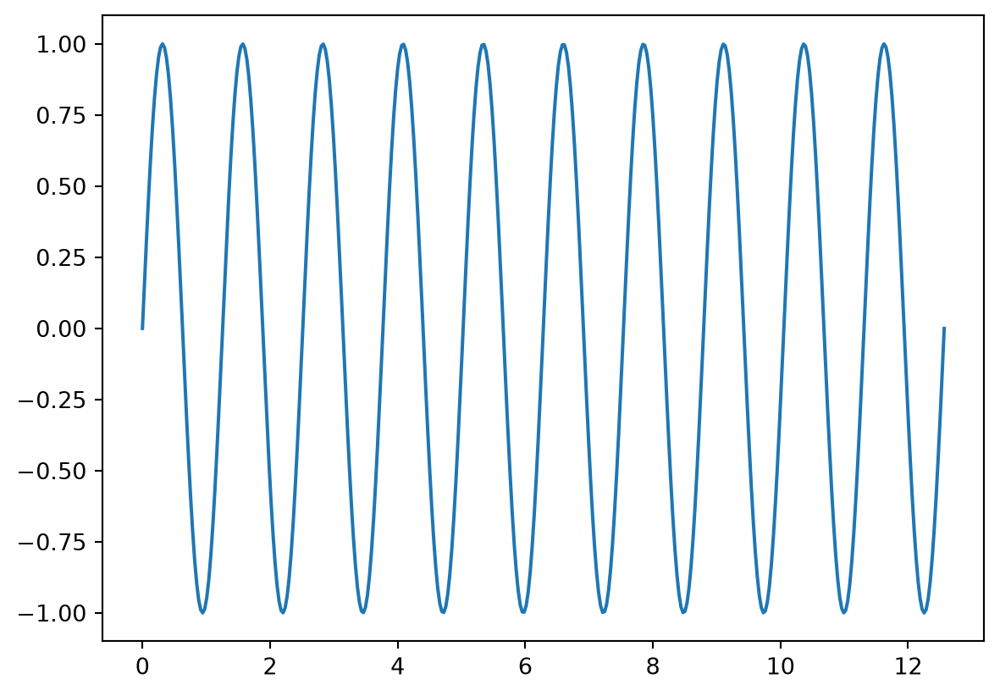

```{python}
import matplotlib.pyplot as plt
import numpy as np
rng = np.random.default_rng(1)
def walk(ax, n=200, title=None):
ax.plot(np.cumsum(rng.normal(size=n)))
if title:
ax.set_title(title)
```L: Python cell options and svg
NoteAbout this page
This page tests the panzoom extension with the Jupyter engine: the same cell options as the R pages, on matplotlib figures. knitr and Jupyter hand figures to Quarto differently (knitr writes the image markdown itself; Jupyter cells come back as notebook outputs), so the filter has to find the figures and their cell options either way. The document has no lightbox: key, and only marked cells should open the viewer.
Rendering it needs Python with matplotlib and ipykernel: see tests/README.md.
Jupyter leaves the panzoom and lightbox options out of the code shown on the page (knitr shows them); the Code button at the top shows the full source.
Headings carry what the browser test checks, as on the other pages: expect-open, expect-hint, expect-max-zoom, expect-fit and expect-format (svg: the viewer got a vector image).
The cases below share this setup and helper:
1. panzoom: true
```{python}
#| fig-cap: A sine wave.
x = np.linspace(0, 4 * np.pi, 400)
plt.plot(x, np.sin(x))
plt.show()
```
2. Options overriding the defaults
```{python}
#| fig-cap: Zoom stops at 2, no hint.
plt.plot(x, np.cos(x))
plt.show()
```
3. Labeled figure with a description
Figure 1 has a description with math and a cross-reference to Figure 2.
```{python}
#| label: fig-scatter
#| fig-cap: A scatter plot, $n = 100$.
pts = rng.normal(size=100)
plt.scatter(pts, pts + rng.normal(scale=0.5, size=100))
plt.show()
```
Points scattered around \(y = x + \varepsilon\), with a “quote”; compare Figure 2.
4. Subfigures (fig-subcap, layout-ncol)
The two subfigures form a gallery.
```{python}
#| label: fig-sub
#| fig-cap: Two subfigures.
#| fig-subcap:
#| - A random walk
#| - A histogram
#| layout-ncol: 2
fig, ax = plt.subplots()
walk(ax)
plt.show()
plt.hist(rng.normal(size=500), bins=30)
plt.show()
```

5. Multi-plot cell with a group
```{python}
#| fig-cap:
#| - First walk.
#| - Second walk.
for i in range(2):
fig, ax = plt.subplots()
walk(ax)
plt.show()
```

6. Wide collage (8 × 0.8 in)
A strip, so it opens at screen height. Jupyter figures are shown at their size in inches × 96 px (Quarto writes it on the image), not shrunk to the column as knitr’s are: a 25 × 2 in collage would be 2,400 px wide on the page, cut off at the column’s edge. This one fits.
```{python}
#| fig-cap: An 8 × 0.8 inch collage of 8 panels.
fig, axes = plt.subplots(1, 8, figsize=(8, 0.8), layout="constrained")
for ax in axes:
walk(ax)
ax.tick_params(labelsize=4)
plt.show()
```
7. panzoom: false inside a .panzoom div
```{python}
#| fig-cap: Left alone.
plt.plot(x, np.sin(2 * x))
plt.show()
```
8. classes: panzoom
```{python}
#| classes: panzoom
#| fig-cap: "Marked with the classes cell option."
plt.plot(x, np.sin(3 * x))
plt.show()
```
9. Lightbox cell option only
Quarto’s lightbox, not panzoom.
```{python}
#| fig-cap: Opened by Quarto's lightbox.
plt.plot(x, np.sin(4 * x))
plt.show()
```
10. Plain cell, no options
```{python}
#| fig-cap: "No options: not opened."
plt.plot(x, np.sin(5 * x))
plt.show()
```
11. panzoom and lightbox options on one cell
Both options: panzoom wins, and the lightbox: options are dropped. (With Jupyter, Quarto’s lightbox ignores #| lightbox: with options under it anyway, unlike with knitr; lightbox: true works, as in case 9.)
```{python}
#| fig-cap: 'Both options: panzoom.'
plt.plot(x, np.sin(6 * x))
plt.show()
```
12. matplotlib as svg
The same figure path as case 1, written as svg instead of png: Jupyter saves the figure file itself, unlike knitr (svg from R is on E: image formats). The viewer redraws svg at each zoom, so it stays sharp. Jupyter ignores a cell’s fig-format, so the cell switches matplotlib’s output to svg itself, and back to png after.
```{python}
#| fig-cap: A damped wave, as svg.
%config InlineBackend.figure_formats = ["svg"]
plt.plot(x, np.exp(-x / 4) * np.sin(3 * x))
plt.show()
%config InlineBackend.figure_formats = ["png"]
```